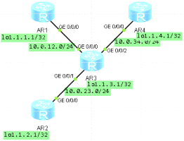
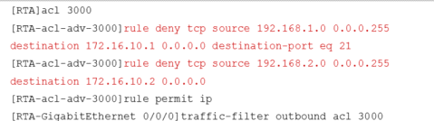

ACL基础访问控制

基本ACL的语法规则
ACL的执行是有顺序行的，如果规则ID小的规则已经被命中，并执行了允许或者拒绝的动作，那么后续的规则就不再继续匹配
三种ACL：基本ACL、高级ACL、二层ACL
基本ACL：编号范围：2000-2999，使用报文的源IP地址、分片标记和时间段信息来匹配报文；
高级ACL：编号范围：3000-3999，使用报文的源/目的IP地址，源/目的端口号以及协议类型等信息来匹配报文；
二层ACL：编号范围：4000-4999，使用源/目的MAC地址以及二层协议等二层信息来匹配报文
运行OSPF协议区域0，r1网络访问r4网络，其他均不能访问
配置基本ACL控制访问
[R4]acl 2000（定义一个标准ACL2000）
[R4-acl-basic-2000]rule 5 deny source 1.1.1.1 0.0.0.0 # （第一条语句精确匹配
拒绝源为1.1.1.1/32单个IP的所有流量）
[R4-acl-basic-2000]rule 10 permit source any #
（需要注意ACL是从上至下逐条匹配的，所以需在第一条拒绝语句后跟一条允许所有的以保证其他流量通过）
[r4]int g 0/0/0
[r4-GigabitEthernet0/0/0]traffic-filter inbound acl 2000 #
（在接口的in方向应用ACL）
配置高级的访问控制列表
在R4上配置高级acl 允许1.1.1.1访问telnet服务
开启telnet验证
[r4]user-interface vty 0 4
[r4-ui-vty0-4]protocol inbound all
[r4-ui-vty0-4]authentication-mode password
Please configure the login password (maximum length 16):huawei1
在r4上配置ACL规则
acl number 3001
rule 5 permit tcp source 1.1.1.1 0 destination 1.1.4.1 0 destination-port eq
telnet
rule 10 permit ospf
rule 20 deny ip
在入接口上调用
interface GigabitEthernet0/0/0
ip address 10.0.34.4 255.255.255.0
traffic-filter inbound acl 3001
测试
也可以在r3出接口上配置该规则
通过实验证明：
（inbound调用）
[switch]acl 2000
[switch-acl-basic-2000]rule 5 deny source192.168.2.2 0
[switch]traffic-filter inbound acl 2000
(这这一步的实验中得出结论，阻止了来自源地址192.168.2.2的任何访问流量，自身2.0网段互访也不可以实现。)
如果将acl进行更改为：
[switch-acl-basic-2000]rule 5 deny source192.168.2.0 0.0.0.255
(这样表示拒绝来自192.168.2.0网段的所有流量，那么这时候2.0网段不仅不可以访问其他网段，而且连自身网段2.0内部互访都不可以。)
（对于上面的这种标准acl在inbound下调用和在outbound调用效果一样）
（接口下调用）
如果在三层交换的接口GE 0/0/1接口下同时调用inbound和outbound的acl 2000，如下
[switch-acl-basic-2000]rule 5 deny source192.168.2.0 0.0.0.255
[switch]interface GigabitEthernet 0/0/1
[switch-GigabitEthernet0/0/1]traffic-filterinbound acl 2000
[switch-GigabitEthernet0/0/1]traffic-filteroutbound acl 2000
[switch-GigabitEthernet0/0/1]restart #重新启动端口才能生效
这样192.168.1.3无论是在进方向还是出方向上都无法访问2.0网段，同时2.0网段的数据流量也进不来。

基本ACL可以依据源IP地址进行报文过滤，而高级ACL能够依据源/目的IP地址、源/目的端口号、网络层及传输层协议以及IP流量分类和TCP标记值等各种参数（SYN|ACK|FIN等）进行报文过滤。
本示例中，RTA上定义了高级ACL3000，
其中第一条规则“rule denytcp source 192.168.1.0 0.0.0.255 destination 172.16.10.1
0.0.0.0destination-port eq 21”
用于限制源地址范围是192.168.1.0/24，目的IP地址为172.16.10.1，目的端口号为21的所有TCP报文；
第二条规则“rule deny tcp source 192.168.2.0 0.0.0.255 destination
172.16.10.20.0.0.0 ”
用于限制源地址范围是 192.168.2.0/24 ， 目的地址是172.16.10.2的所有TCP报文；
第三条规则“rule permit ip”
用于匹配所有IP报文，并对报文执行允许动作。